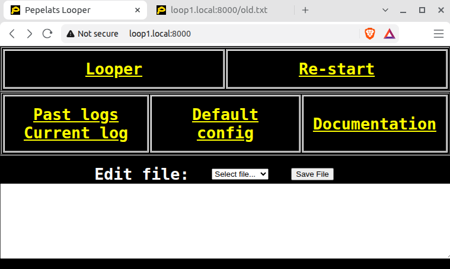
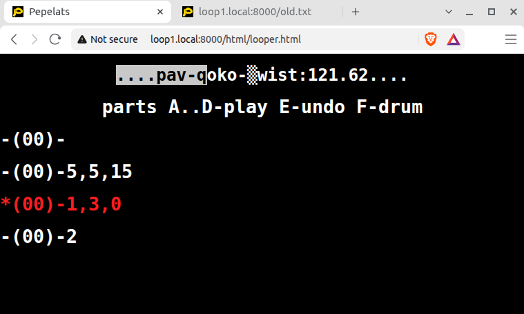
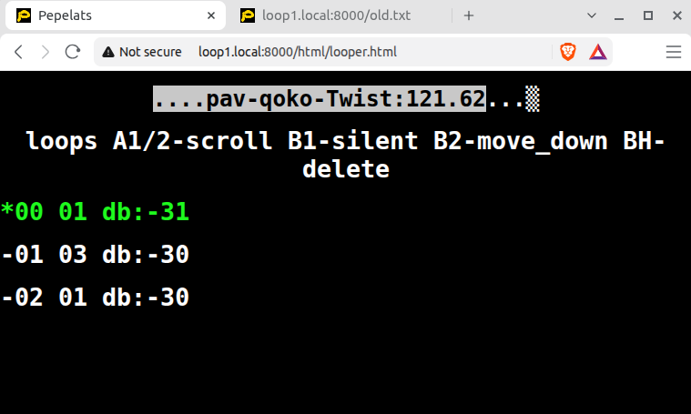
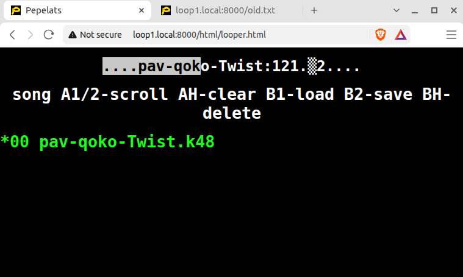
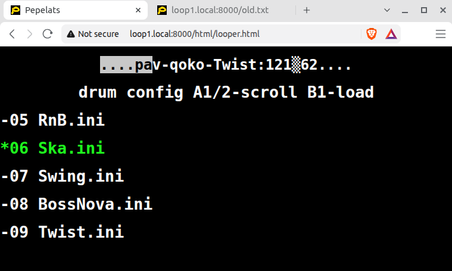
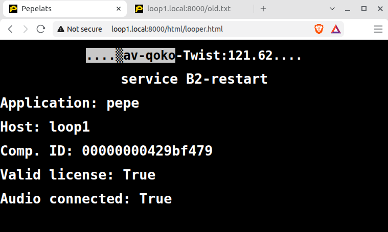
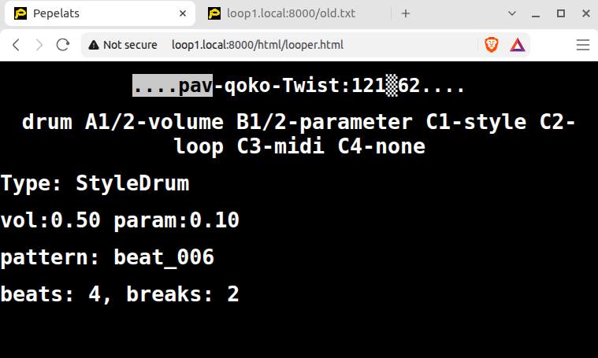

There are 4 song parts shown in this view. List of numbers (ex: 5,5,15) shows how many loops part has and number of bars in each loop.
Number in parenthesis -(00)- shows how many undone loops this part has
Part marked with star * is currently selected. Red color shows that it is recording now.
On top the progress bar shows two markers – inverse color for base loop position and solid block ▒ the longest loop position

In this section we see number of bars for each loop and decibels level for each loop.

In song menu songs may be scrolled, cleared, loaded, saved, deleted.

Another section of song menu allows to change drum configuration (e.g. Disco, Blues, ...).

This section is to provide information and restart.

This section is to change volume and randomness of drum. Additionally it allows to change drum type – this will make an empty song with selected drum type.
